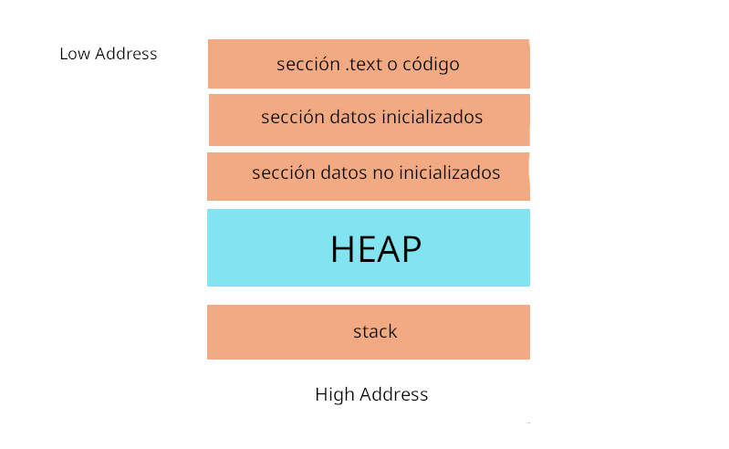

Buffer overflow 1
int main(int argc, char *argv []){
char buffer [256];
strcpy(buffer, argv[1]);
return 0;
}
gcc -m32 -mpreferred-stack-boundary=2 -fno-stack-protector -z execstack overflow.c -o overflow
Algunas veces es necesario desactivar selinux con setenforce 0, no es siempre, pero te resuelve algunos problemas, pero repito, no es necesario si no haz presentado algun problema extraño.
sysctl -w kernel.randomize_va_space=0
sysctl -w kernel.randomize_va_space=2
Vamos a explicar una representación de la memoria antes para entender que está pasando.
Ok, vamos a explicar la imagen de arriba, merece la pena por si no entiendes qué es eso.
SECCIÓN CÓDIGO
Aquí es donde está el código del programa.
SECCIÓN DE INICIALIZADOS
Aquí es donde están las variables inicializadas, por ejemplo.
int variable = 1234;
SECCIÓN DE NO INICIALIZADOS
Aquí es donde están las variables no inicializadas, por ejemplo.
int variable;
SECCIÓN HEAP
Aquí es donde se hacen las reservas de memoria, puede ser que se reserve memoria directamente si es poca lo que se necesita, o puede ser que se coloquen varios segmentos de memoria si se necesitan más o los famosos segmentos "arena" cuando se necesita bastante más memoria, por ejemplo, malloc, calloc, vamos a explicarlos.
int memoria = (int*)malloc(5 * sizeof(int));
memoria -> [20 bytes] -> un espacio de 20 bytes
int memoria = (int*)calloc(5, sizeof(int));
memoria -> [4][4][4][4][4] -> 5 espacios de 4 bytes
SECCIÓN DE STACK
Aquí entran los registros temporales que se van moviendo con LIFO, "last in, first out", es como si fueramos colocando varios bloques, la diferencia es que los bloques aquí los vamos colocando abajo, y el primero de arriba es el que sale de la pila.
Ahora vamos a detectar el buffer overflow con el código de arriba.
Vamos a hacerlo usando python2, puedes usar el python3 pero a veces hay algunos problemas con esa versión a la hora de usar bytes, pero igual lo puedes intentar.
Podemos ver que es vulnerable con 260 bytes, que sería 256 del buffer y 4 de return pero no olvidemos ebp serían otros 4, vamos a analizarlo con GDB, lo más probable es que sean 264.
Vemos como se genera un strcpy() al abrir un espacio de 256 (0x100), y luego copia ese bloque en otro nuevo.
char* strcpy(char* destination, const char* source);
Vamos a provocar el fallo de segmento sobrescribiendo el stack.
r $(python2 -c 'print "A"*264')
Vemos que se produce un overflow en $ebp, pero no sobreescribe EIP que es un puntero a la siguiente instrucción.
Primero pongamos un break después de strcpy, para verificar en que dirección se guarda el overflow "AAAA", que sería "0x41414141", y para diferenciar en donde se sobrescribe ret para saltar a un bloque de memoria, vamos a colocar "BBBB", que sería, "0x42424242", pero por la siguiente imagen se podrán dar cuenta que se sobrescribe hasta que ponemos "CCCC".
r $(python2 -c 'print "A"*264 + "CCCC"')
Vemos que se sobreescribe ret, vamos a simular una shell con INT 3 que sería una interrupción, en hex sería "0xcc", hagamos una shell de 25 bytes, debería quedar:
"264 - 25 = "A"*235 + "\xcc"*25 + "\x4c\xd1\xff\xff" -> 264 bytes"
Aparece que hubo un error en la caja de segmentos, vamos a bajar 4 bytes para tratar de acomodar los datos, ya sea restar o sumar, pero vamos a donde debería estar 0x424242
r $(python2 -c 'print "\x90"*239 + "\xcc"*25 + "\x39\xd1\xff\xff"')
Listo, conseguimos SIGTRAP que sería la señal de interrupción, sin embargo, hay un detalle importante, podemos ver como no parece ser el inicio, así que bajemos los bytes.
¿Porqué es importante?, si no queda al inicio, una shellcode podría quedar mal, ya que empezará desde una zona donde la shellcode quedaría incompleta y nunca se ejecutará.
Ya solo restaría que coloquen una shell y vayan moviendo las direcciónes o bytes para que se ejecute.
Nota: Puede cambiar en ciertas ocasiones, por ejemplo, en otro sistema linux el resultado cambio, a diferencia del anterior que se usaron 264 + 4 byte para RET, aquí solo se necesitaron 260 + 4 bytes para RET
Listo.